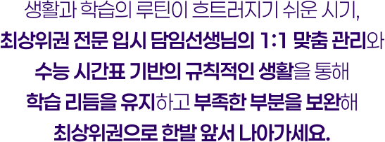
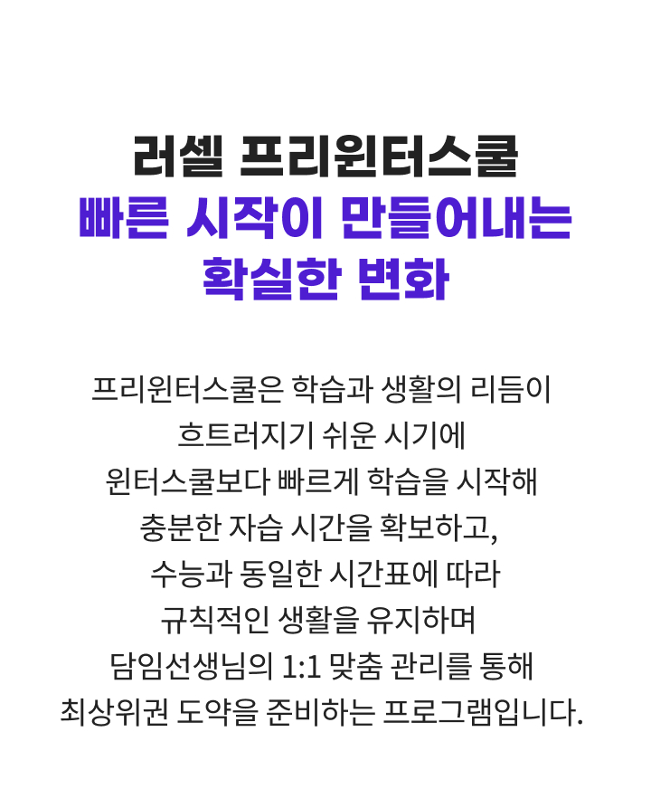
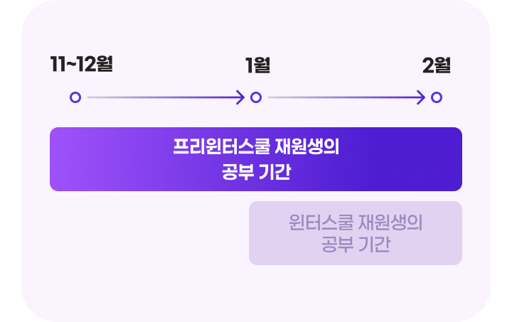
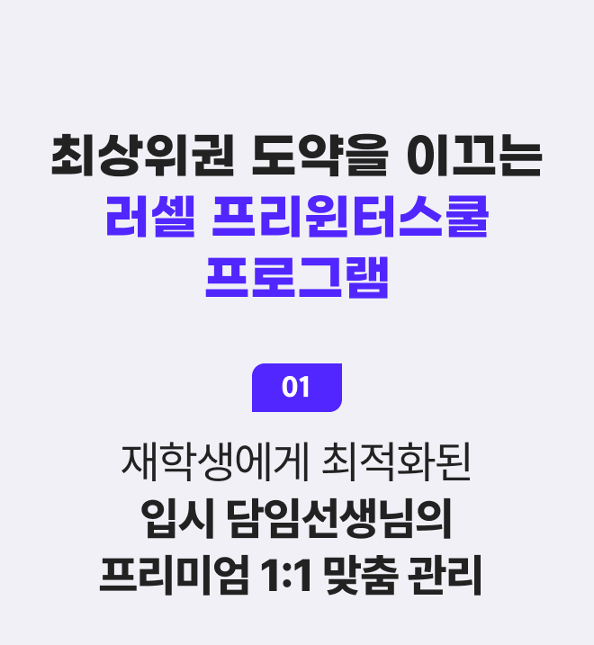
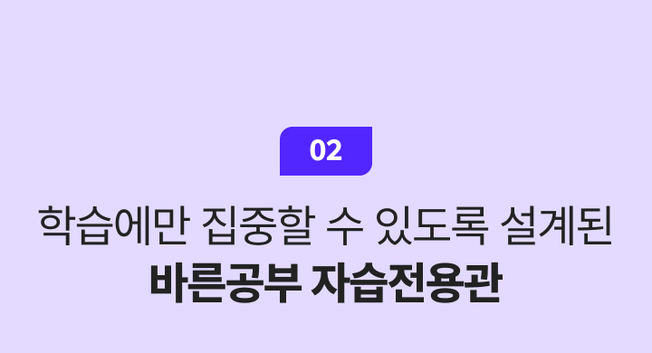
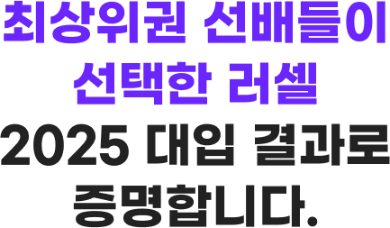

- 모집 대상
- 중3~고2
- 운영 기간
- 25년 11월~25년 12월
- 학원별 일정 및 모집요강은 상이할 수 있으니,
자세한 내용은 학원별 페이지에서 확인 부탁드립니다.
-
11~12월
프리윈터스쿨
-
1~2월
윈터스쿨
바로가기 -
3~6월
재학생 정규반
-
7~8월
썸머스쿨
-
9~11월
파이널 정규반
* 커리큘럼 일정은 학원 운영 상황에 따라 변경될 수 있습니다.




바른공부 자습전용관 표준 시간표 (고1/고2)
| 구분 | 시간 | 월 | 화 | 수 | 목 | 금 | 토 | 일 |
|---|---|---|---|---|---|---|---|---|
| 0교시 | 07:00~07:50 (50분) | 학교 / 선택 자습 | 자습 | 선택자습 | ||||
| 1교시 | 08:00~08:40 (40분) | |||||||
| 2교시 | 08:50~10:10 (80분) | |||||||
| 3교시 | 10:30~12:10 (100분) | |||||||
| 점심식사 | 12:10~13:10 (60분) | - | ||||||
| 4교시 | 13:10~14:20 (70분) | 자습 | 선택자습 | |||||
| 5교시 | 14:40~16:00 (80분) | |||||||
| 6교시 | 16:20~17:30 (70분) | |||||||
| 저녁식사 | 17:30~18:30 (60분) | - | ||||||
| 7교시 | 18:30~20:00 (90분) | 자습 | 자습 | 자습 | 자습 | 자습 | 자습 | 선택자습 |
| 8교시 | 20:30~22:00 (90분) | |||||||
| 귀가 | 22:00~22:20 (20분) | - | ||||||
| 9교시 | 22:20~23:00 (40분) | 선택자습 | 선택자습 | 선택자습 | 선택자습 | 선택자습 | 선택자습 | 선택자습 |
| 10교시 | 23:10~24:00 (50분) | |||||||
* 학원별 운영 시간표는 상이합니다.

바른공부 자습전용관 표준 시간표 (중3)
| 구분 | 시간 | 월 | 화 | 수 | 목 | 금 | 토 | 일(공휴일) | ||
|---|---|---|---|---|---|---|---|---|---|---|
| 오전 | 1교시 | 8:00~08:30 | 30분 | 자습 | 자습 | 자습 | 자습 | 자습 | 자습 | 선택자습 |
| 조회 | 08:30~08:40 | 10분 | - | |||||||
| 2교시 | 8:50~10:10 | 80분 | 자습 | 자습 | 자습 | 자습 | 자습 | 자습 | ||
| 3교시 | 10:20~12:00 | 100분 | ||||||||
| 점심식사 | 12:00~13:10 | 70분 | - | |||||||
| 오후 | 4교시 | 13:10~14:20 | 70분 | 공통수학1 수업 |
영어 수업 |
공통수학1 수업 |
영어 수업 |
자습 | 자습 | 선택자습 |
| 5교시 | 14:30~15:40 | 70분 | ||||||||
| 6교시 | 15:50~17:00 | 70분 | ||||||||
| 종례 | 17:10~17:30 | 20분 | - | |||||||
| 저녁식사 | 17:30~18:40 | 70분 | - | |||||||
| 저녁 | 7교시 | 18:40~20:10 | 90분 | 자습 | 자습 | 자습 | 자습 | 자습 | 자습 | 선택자습 |
| 8교시 | 20:30~22:00 | 90분 | ||||||||
| 귀가 | 22:00~22:20 | 20분 | - | |||||||
* 학원별 운영 시간표는 상이합니다.

-
- 메이저 의대
- 0명1)
-
- 전국 의예과
- 0명2)
-
- 의·치·한·약·수
- 0명3)
-
- 서울대 의예과
- 0명4)
-
- 서울대
- 0명5)
-
- 서울대·
연세대·고려대 - 0명6)
- 서울대·
데이터 산출 기준
※ 본 결과는 최상위권 전문관(구 양지 기숙), 자연계 전문관(구 서초 기숙), 서의치관, 남의대관, 여의대관, 안성기숙 입결 결과가 포함되어 있습니다.
1) 2020-2025학년도 러셀에서 배출한 메이저 의대 합격자 중 2025학년도 최다 배출
ㄴ 2025학년도 메이저 의대(서울대 13명, 연세대 16명, 가톨릭대 18명, 성균관대 22명, 고려대 22명, 울산대 24명)
2) 2020-2025학년도 러셀에서 배출한 전국 의예과, 의학과, 의과대학 합격자 중 2025학년도 최다 배출
3) 2020-2025학년도 러셀에서 배출한 전국 의·치·한·약·수 (석학사 통합과정 포함) 합격자 중 2025학년도 최다 배출
4) 2025학년도 러셀에서 배출한 서울대 의예과 합격자 수
5) 2025학년도 러셀에서 배출한 서울대 합격자 수
6) 2020-2025학년도 러셀에서 배출한 서울대, 연세대, 고려대 합격자 중 2025학년도 최다 배출
ㄴ (서울대 243명, 연세대 418명, 고려대 563명)
2025학년도 대입 합격 결과

※ 본 결과는 최상위권 전문관(구 양지 기숙), 자연계 전문관(구 서초 기숙), 서의치관, 남의대관, 여의대관, 안성기숙 입결 결과가 포함되어 있습니다.
1) 2020-2025학년도 러셀에서 배출한 메이저 의대 합격자 중 2025학년도 최다 배출
ㄴ 2025학년도 메이저 의대(서울대 13명, 연세대 16명, 가톨릭대 18명, 성균관대 22명, 고려대 22명, 울산대 24명)
2) 2020-2025학년도 러셀에서 배출한 전국 의예과, 의학과, 의과대학 합격자 중 2025학년도 최다 배출
3) 2020-2025학년도 러셀에서 배출한 전국 의·치·한·약·수 (석학사 통합과정 포함) 합격자 중 2025학년도 최다 배출
4) 2025학년도 러셀에서 배출한 서울대 의예과 합격자 수
5) 2025학년도 러셀에서 배출한 서울대 합격자 수
6) 2020-2025학년도 러셀에서 배출한 서울대, 연세대, 고려대 합격자 중 2025학년도 최다 배출
ㄴ (서울대 243명, 연세대 418명, 고려대 563명)